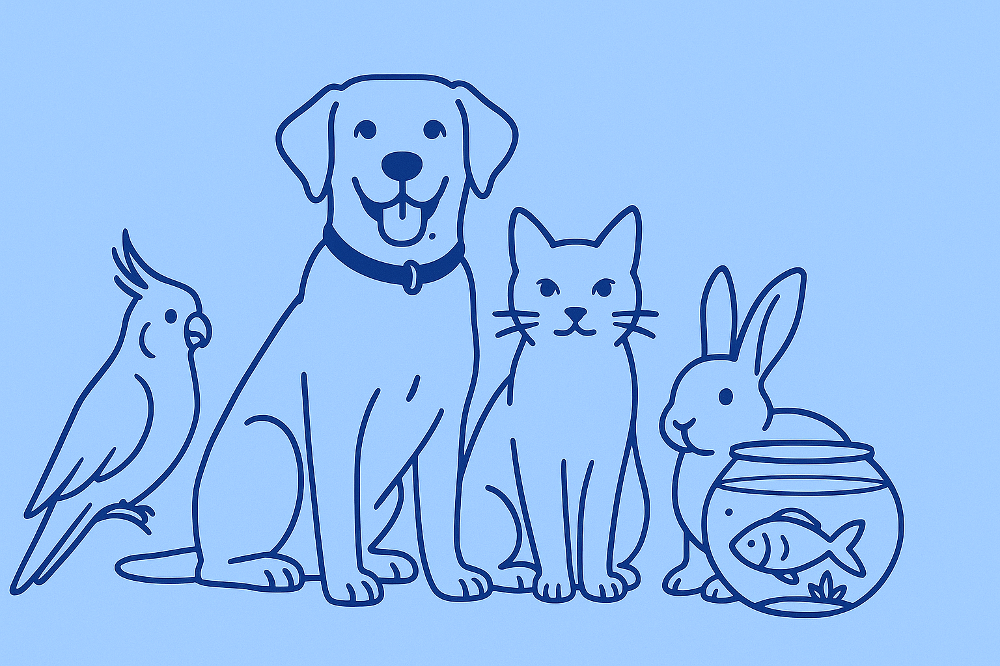
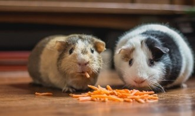
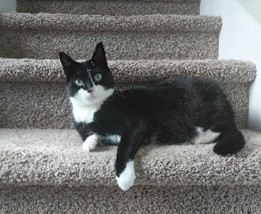
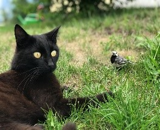
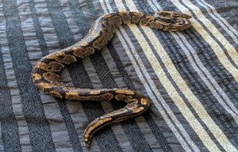
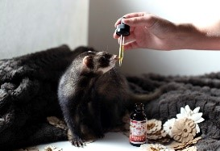
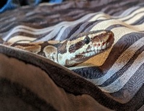

Evidence-based pet care advice for every pet lover
12 years of experience • Certified pet health & nutrition experts • Outstanding customer support

Pets are nature's gift to humanity. It has been scientifically
proven that opening our homes and hearts to a pet increases our
longevity and improves our overall quality of life as well as the
lives of our pets. At Paradigm Pet Professionals, our mission is to
offer resources to help you care for your furry, scaly, feathery,
and slimy loved ones. Our pet experts—or "Experts"—have been
working with pet owners and professionals alike for the past twelve
years. They offer one-on-one consultations with current and
prospective pet owners as well as group presentations designed for
veterinary, pet shelter, and pet breeding professionals.
Looking for basic pet care advice for the most common type of pets?
Need additional help determining which type of pet is right for you
and your family? We will work with you and provide tailored
evidence-based pet care to ensure lifelong health and wellness of
your new companion.
Services Overview
🎥
Virtual Consultations
Get expert advice from the comfort of your home through our virtual consultation services.
🤝
One-on-One Consultations
Personalized pet care guidance tailored to your specific pet's needs and your family situation.
👥
Group Presentations
Educational sessions for veterinary professionals, pet shelters,
and breeding organizations.
Pet Care Categories
Learn More
Dogs
Activity needs, exercise, grooming, and lifetime care for your
canine companion.
Learn More
Cats
Feeding guidelines, nutrition, and care recommendations based
on age and breed.

Learn More
Small Animals
Housing, care, and environment setup for guinea pigs,
hamsters, and more.
Adoption Resources
Looking for your new best friend? The following organizations can
help you find and adopt the perfect companion:
We are also happy to help you navigate the adoption process! We will
guide you through each step in the process from determining which
type of pet is best suited for your family and home environment, to
completing the necessary paperwork, to bringing your new loved one
home. Please fill out our contact form to request a consultation. We
will contact you within 48 hours to schedule a consultation. All
fields are required.
Dog Care Guide
The domestic dog is an extremely social animal and offers a diverse variety of choices as there are well over 300 breeds recognized by the World Canine Organization. Adopting a dog offers mutual benefits between dog and owner. Many studies cite the social benefits of having a companion as well as the reduced feelings of loneliness from adopting a dog. Studies even show medical indicators such as reduced blood pressure and improved lipid profiles. If you have a dog, it is important to make sure that you care for your dog; be mindful of what you feed your dog and provide enough opportunities for exercise.
Diet & Exercise
Throughout dogs' lifespans, they should generally be fed fewer meals as they mature. Puppies should be nursed the first two months, then introduced to three meals per day when they are about three to six months years old. Their food intake should be reduced to two meals per day when they are six months to one year old and finally reduced to one meal after they reach one year old. And a dog's typical body mass is composed of somewhere between 60 and 70 percent water. The ASPCA says just a 10 percent decrease in body water can cause illness, and a 15 percent loss can cause death, so make sure you keep your pooch hydrated!
Much like humans, dogs need to have a healthy level of activity to keep their organs healthy, as well as sun and fresh air. The minimum recommended time for exercise varies greatly with breed and size differences, but generally a range of 30–120 minutes of exercise is recommended per day!
Grooming & Handling
Keeping your furry family member clean is important to its health. So be sure to brush frequently to reduce the amount of shedding and prevent matted and tangled fur that can prove to be extremely difficult to remove. Check for insects such as ticks and fleas, especially after visiting heavily wooded areas.
Vaccinations & Medications
You should always consult with your veterinarian, but there is a core set of vaccines that are typically recommended. Vaccines that reduce the exposure risk to things such as hepatitis, rabies, and parvovirus. Others may be determined by your vet depending on the environment in which the dog resides.Some of these include Bordetella bronchiectasis, Borrelia burgdorferi, and Leptospira bacteria
Cat Care Guide


Cats were first domesticated around 7500 BCE in the western Asia region and are currently the second most popular domestic pet in the United States. While there are over 60 unique documented cat breeds, care and diet can differ between breeds. However, some diets and practices are generally recommended for the well-being of your fluffy family member regardless of breed.
Zero to Four Weeks
It is important the queen (a term commonly used for a female cat that is either pregnant or nursing) directly nurse her young if possible. Monitor your kitten's growth closely to make sure its growth rate is progressing steadily. If any kitten is not growing at a sufficient rate, a caretaker might need to feed the kitten directly either with a bottle or a feeding tube.
Some reasons why kittens might not gain weight appropriately include the following:
Too many other siblings are competing for mom's milk
Gastrointestinal disease
Environmental conditions such as extreme heat or cold, or unsanitary conditions
Four Weeks to One Year
Kittens can start being introduced to soft wet kitten food typically around three to four weeks after birth. According to the ASPCA, kittens at this age should eat half to one cup of dry kitten food or six to nine ounces of wet kitten food per day. If your kitten has difficulties eating hard food, a small amount of water can be added to soften the food.
One Year to Seven Years
This age is when kittens reach the cat stage and do not need as many nutrients. At this age, their level of activity decreases, and so does their metabolism. It is not recommended to leave food out for the cats all day. Instead, provide food a couple times a day so they eat meals rather than snacking throughout the day. This practice reduces the risk of obesity and other weight-related feline ailments.
Seven Years and More
Much like many living organisms, the body begins to deteriorate and experience a lot of changes. Cats at this age should eat less fats and calories and more quality proteins. This means when you are purchasing packaged foods for your cat, look for food that states a particular protein (such as "salmon") and not just a category (such as fish). This usually means they are byproducts, or combinations, of lesser-quality proteins.
Small Animal Care Guide



Sometimes we want a pet in our life but think it's impossible because we are not home enough to take care of it, or we don't have enough room. Consider adopting a small animal such as a hermit crab, mouse, gerbil, hamster, guinea pig, or even a chinchilla!
Depending on which type of animal you adopt, you can provide a comfortable environment using anything from small to large cages or glass aquariums. You will also need to provide amenities for your new pet, such as:
Bedding or substrate
Toys
Exercise wheel
Water dish or drip bottle
Food dish
Grooming equipment
You also need to consider if your new pet will need a friend or if it will be happy living alone. Our "Experts" are here to help you decide which pet is right for you and how to provide them with a happy home. Schedule a consultation with us today!
We are here to help you provide the best care for your beloved pets. Please fill out our contact form to request a consultation. We will contact you within 48 hours to schedule a consultation. All fields are required.
Request a Consultation
Our Services
Virtual Consultations
Get expert advice from the comfort of your home through our virtual consultation services.
One-on-One Consultations
Personalized pet care advice tailored to your specific pet's needs and circumstances.
Group Presentations
Educational presentations for veterinary professionals, pet shelters, and breeding professionals.
Get in Touch
Our "Experts" have 12+ years of experience and certifications in pet health and nutrition. We're here to provide evidence-based pet care advice for every pet lover.